Огляди · журнал «ДентАрт» 2017 №1
Молярно-різцева гіпомінералізація: завдання з кількома невідомими. Частина I
MOLAR-INCISOR HYPOMINERALIZATION: PROBLEM WITH SEVERAL UNKNOWN QUANTITIES
На цей феномен стали звертати увагу, починаючи з другої половини сімдесятих років минулого століття. Найімовірніше, він існував і раніше, але виявлявся вже на етапах ускладнень, які цілком резонно діагностували як карієс або його наслідки. У другій половині минулого століття акцент уваги стоматологів став зміщуватися в бік більш точної і ранньої діагностики захворювань зубів, їх профілактики, і це, можливо, і привело до виявлення вродженої патології твердих тканин, яка відрізнялася від усього відомого раніше.
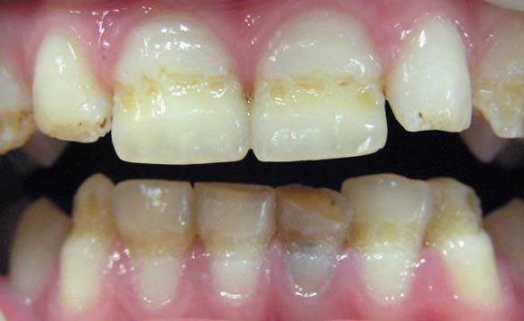
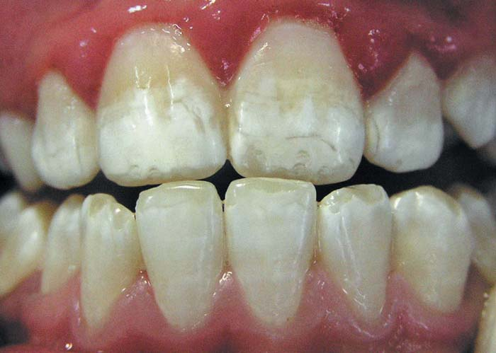
Фото 1, 2. Системна (хронологічна) гіпоплазія постійних зубів (різців). Характерне стоншення емалі через дефект формування її білкової матриці у період внутрішньощелепного розвитку, строга симетричність ураження і відповідність його рівня ділянці зуба, формування якої відбувалося в момент впливу несприятливого фактора.
Народження питання
Ідеться про обмежені ділянки гіпомінералізації (плями від білого до коричневого відтінку) з наступною деструкцією емалі, переважно на постійних молярах і різцях, що з'являються до прорізування зубів. Від звичної картини системної гіпоплазії захворювання відрізнялося відсутністю суворої симетричності дефектів — як щодо уражених зубів, так і щодо форми плям, швидким руйнуванням зубів (при початковій відсутності порожнини в емалі), а також складністю встановлення очевидної причини вродженої вади. Відсутність відповідного анамнезу і ураження лише певних зубів відрізняло виявлену патологію від флюорозу, а вибірковість ураження зубів — від недосконалого амелогенезу. Наприкінці 80-х феномен отримав назву «гіпомінералізація емалі перших постійних молярів».1 Переважно уражалися один або більше молярів і часто — різці. Нині з'ясовано, що поширеність цього захворювання у світі коливається в межах від 2,4 до 44% серед дітей, народжених у різний час у різних країнах.2-4
Описаний стан викликав труднощі в інтерпретації клінічних даних і віднесенні їх до певних патологічних станів, включених до міжнародної номенклатури стоматологічних захворювань. Для внесення визначеності в це питання робоча група FDI у 1982 р. ввела індекс DDE (Developmental Defects of Enamel), який незабаром був модифікований (modified DDE index — mDDE), конкретизований і впроваджений у практику в 1992 р. Цей індекс передбачав визначення наявності в емалі обмежених ділянок непрозорої (опакової) емалі (demarcated opacities), опакових ділянок без обмеження (diffuse opacities) і гіпоплазії (кількісний дефект тканини емалі).


Фото 3, 4. Флюороз. Характерне ураження всіх зубів і відносна симетричність плям, не завжди чіткі їх межі, порушення цілісності емалі за тяжчих форм.
Хроніка одного діагнозу
У 1987 році G. Koch і співавт. повідомили про частоту гіпомінералізованих перших молярів у осіб, народжених у Швеції.1 У подальшому такі моляри отримали чимало інших назв: нефториста гіпомінералізація, ідіопатична гіпомінералізація емалі, неендемічна плямистість емалі, «сирні» моляри.5
У 2001 році K.L. Weerheijm і співавт. уперше використали для описаного стану термін «молярно-різцева гіпомінералізація» — МРГ (Molar-Incisor Hypomineralisation — MIH). Запропонований термін позначав обмежені якісні вроджені дефекти в емалі, що мають місце на одному або кількох постійних молярах, із залученням різців чи без цього, причому ураження лише різців без залучення хоча б одного моляра не було підставою для такого діагнозу.6
З 2003 року почали з'являтися повідомлення про те, що подібні МРГ ураження можуть зустрічатися також на других тимчасових молярах із залученням від одного до всіх чотирьох зубів; уражалися від 4,9 до 9% тимчасових п'ятих зубів (Drummond 2015). Такий стан отримав назву «гіпомінералізовані другі тимчасові моляри» — hypomineralised second primary molar (HSPM),7 або гіпомінералізація тимчасових молярів.8-10
У 2003 році на семінарі EAPD (Європейської академії педіатричної стоматології) були задекларовані критерії діагностики МРГ,7 проведена певна систематизація випадків захворювання. Визначення МРГ EAPD звучить як «гіпомінералізація системного походження одного або кількох перших постійних молярів, часто асоційована з ураженням різців».
У 2009 році критерії були вдосконалені на семінарі EAPD у Гельсинкі.11
У 2014 році на 12-му конгресі EAPD у Сопоті (Польща) було дано новий поштовх дослідженню епідеміології МРГ на основі розроблених EAPD рекомендацій і критеріїв. Загальним висновком дослідників і експертів стала необхідність подальшого розвитку рекомендацій, методів і підходів до нагромадження даних щодо МРГ.12
У 2015 році на базі результатів Конгресу EAPD були опубліковані діагностичні критерії і рекомендації щодо уніфікації результатів обстеження дітей з порушеннями твердих тканин зубів.13 Темою зацікавилися також дослідники країн пострадянського простору — з'явилися публікації, присвячені МРГ, в Росії,14 Білорусі.15
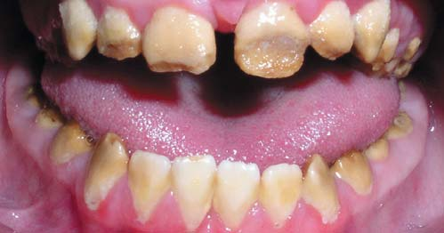
Фото 5. Недосконалий амелогенез. Уражаються всі зуби — як тимчасові, так і постійні. Клінічна картина залежить від форми захворювання, але в більшості випадків цілісність емалі порушена або із самого початку її товщина зменшена.
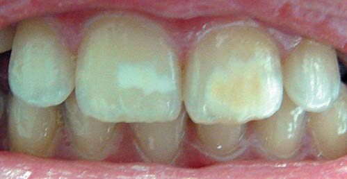
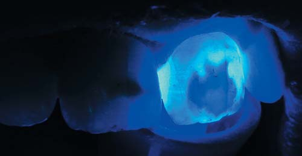
Фото 6. Молярна-різцева гіпомінералізація:
А — обмежені несиметричні плями на постійних різцях;
Б — флуоресценція уражених ділянок відрізняється від флуоресценції здорової на перший погляд тканини зуба.
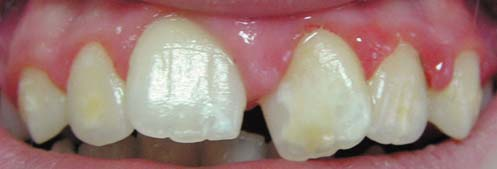
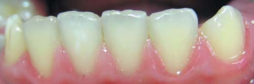
Фото 7. Молярно-різцева гіпомінералізація: плями різної величини і форми локалізуються на всіх верхніх різцях (А) і лише на одному нижньому (Б).
А в Україні?
Стоматологи нашої країни, безперечно, зустрічалися і зустрічаються із цим станом зубів, частіше — дитячі стоматологи, оскільки швидке руйнування зубів з МРГ, як правило, не дозволяє визначити причину втрати твердої тканини зуба у більш зрілому віці. Однак питання МРГ в Україні практично не вивчалося, незважаючи на клінічний досвід дитячих стоматологів та існування проблеми діагностики й інтерпретації цього стану.
У 2011 році в Україні з'явилася перша публікація, присвячена проблемі МРГ,16 і сьогодні ця тема перебуває у сфері наукових інтересів кафедри дитячої терапевтичної стоматології та профілактики стоматологічних захворювань Національного медичного університету імені О.О. Богомольця (Київ). Діагноз МРГ також починає враховуватися вітчизняними дослідниками при вивченні уражень твердих тканин зубів некаріозного походження.
Нарешті, у листопаді 2016 року у Львові під час науково-практичної конференції «Сучасні погляди на діагностику та лікування уражень твердих тканин зубів у дітей» з докладною лекцією про МРГ виступив один з провідних дитячих стоматологів Європи професор Monty Duggal (Велика Британія).
Дослідження поширеності МРГ серед різних груп дітей України, проведені авторами цієї статті, засвідчують відносно невисокий рівень захворюваності. Так, серед 196 практично здорових дітей м. Києва МРГ виявлена у 4%; з 723 дітей, котрі мають статус постраждалих від наслідків аварії на ЧАЕС (дослідження проводилися на базі ДУ «Національний науковий центр радіаційної медицини НАМН України»), МРГ виявлена у 4,6% обстежених. Серед 294 дітей — мешканців різних регіонів України, що мають загальносоматичні захворювання, поширеність МРГ виявилася 2,38% (що становить 11,29% серед усіх виявлених випадків дефектів розвитку емалі).17
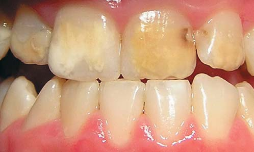
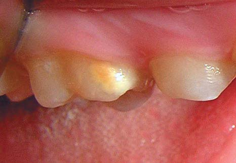
Фото 8. Молярно-різцева гіпомінералізація: А — розвиток карієсу зубів 21 і 22 на тлі МРГ; Б — стара пломба і біла пляма у першому молярі того самого пацієнта.
Етіологія і патогенез
Морфогенез емалі — тривалий комплексний процес із первісною секрецією емалевої білкової матриці і подальшою початковою мінералізацією (кальцифікацією — первинним формуванням на матриці кристалів гідроксиапатиту) та остаточним дозріванням (наростанням кількості мінеральних компонентів емалі і зникненням білкової матриці). Таким чином, порушення функціонування амелобластів на першому етапі (утворення білкової матриці) може супроводжуватися розвитком гіпоплазії — кількісного дефекту емалі зі зменшенням її товщини. Порушення формування емалі у періоди мінералізації і дозрівання може призвести до утворення якісних дефектів, які виявляються у вигляді зміни кольору і прозорості емалі без зміни її товщини,19-21 що і спостерігається при МРГ.
Етіологія і патогенез МРГ досі не вивчені ґрунтовно. Серед чинників, що зумовлюють це захворювання, називають вплив несприятливих факторів зовнішнього середовища протягом нетривалого часу, дефіцит кисню, який має місце під час респіраторних вірусних захворювань, порушення кальцій-фосфатного метаболізму, системні захворювання, уживання певних антибіотиків.22-25
Варто також згадати терміни основних етапів одонтогенезу. Як відомо, перші постійні моляри і різці розвиваються із зубної пластинки з 4-5 місяця ембріонального життя; на 24-25-му тижні вагітності починає окреслюватися фолікул першого постійного моляра; дещо пізніше, на 8-му місяці внутрішньоутробного розвитку, відбувається закладання зачатків постійних різців та іклів; звапніння перших постійних молярів починається з 9 місяця внутрішньоутробного розвитку, постійних різців — з 6-9 місяця після народження дитини.26 Відповідно, значення для розвитку МРГ повинні мати фактори, що впливають у період внутрішньощелепної мінералізації згаданих зубів, а в даному випадку — у період між 18-им тижнем вагітності і 3-5 роками життя дитини, охоплюючи, таким чином, пре-, пери- і постнатальний періоди.

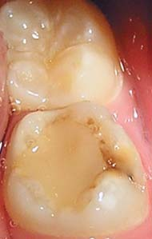
Фото 9, 10. Молярно-різцева гіпомінералізація: обмежені плями на верхніх перших молярах.
Клінічна картина
Клінічно молярно-різцева гіпомінералізація характеризується наявністю ділянок ураження емалі різних відтінків, від білого до жовто-коричневого кольору, у перших постійних молярах або у перших постійних молярах і різцях, присутніх на зубах з моменту їх прорізування. Для діагностики МРГ рекомендовано робити обстеження на зволожених зубах, звертаючи увагу не лише на наявність плям, але й на атипові реставрації та руйнування твердих тканин зубів. Найліпший період для обстеження — 8 років. Характерною є асиметрія уражень, коли, наприклад, патологічні зміни мають місце в одному з молярів, а протилежний моляр не уражений або має мінімальні дефекти. Асиметрія уражень характерна і для різців. У всіх випадках чітко простежується межа між ураженою та здоровою емаллю. Зазначимо, що за плямистої форми класичної (або, у відповідності з прийнятою у світі термінологією, «хронологічної») системної гіпоплазії плями на зубах розташовані строго симетрично, їх локалізація чітко відповідає періодові розвитку зуба, в якому впливав несприятливий фактор, а розмір — тривалості впливу даного чинника. Уражені зуби досить швидко починають руйнуватися (особливо схильні до сколювання ділянки з коричневими тьмяними плямами), активно прогресує карієс (почасти через початково порушену структуру емалі, частково — через посилене скупчення зубної біоплівки, зумовлене шорсткою поверхнею дефекту). Чутливість твердих тканин нерідко підвищена.27
Класифікація
В основу класифікації МРГ покладено ступінь вираженості дефектів структури твердих тканин зубів.22,24
| Показник | слабкий | середній | тяжкий |
|---|---|---|---|
| Ураження різців | незначне | видиме порушення естетики | значне |
| Локалізація плям на різцях | гладенькі поверхні | залучення ріжучого краю | може бути залучено кілька поверхонь |
| Локалізація плям на молярах | нежувальні поверхні | оклюзійні поверхні | залучено кілька поверхонь |
| Гіперестезія | відсутня | відсутня або слабко виражена | має місце |
| Карієс уражених зубів | відсутній | може бути не більше, ніж на 2-х поверхнях, без ураження пришийкової зони | деструкція емалі, виникнення карієсу невдовзі після прорізування зуба; ускладнення карієсу |
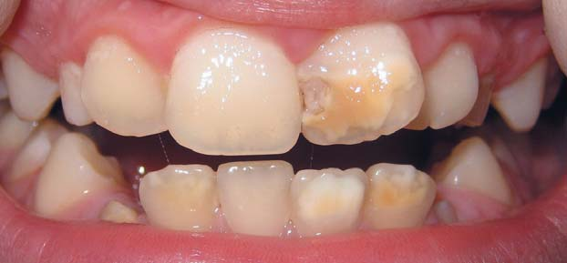
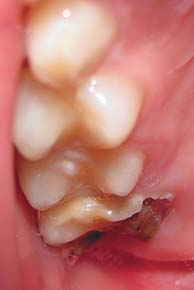
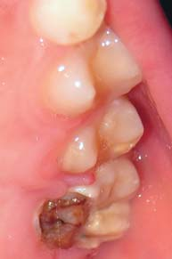
Фото 11. Молярно-різцева гіпомінералізація тяжкого ступеня: розвиток карієсу на фронтальних зубах (А) і руйнування молярів (Б, В).
Властивості та мікроструктура ураженої емалі
Виявлено, що твердість і модуль еластичності ураженої емалі при МРГ знижені на 50-75% і корелюють з одночасним зниженням вмісту мінеральних компонентів емалі — кальцію та фосфатів22 і підвищенням вмісту карбонатів.28 Мікроскопічно емаль уражених ділянок має звичайну структуру, але спостерігається деяка її дезорганізація і збільшена пористість.19, 29-30 Межі між емалевими призмами нечіткі, має місце нещільна упаковка кристалів гідроксиапатиту. При тяжчому ураженні емалеві призми стоншені, з широкими проміжками, заповненими органічним матеріалом. Протравлювання фосфорною кислотою не супроводжується формуванням жодного з класичних типів протравлювання здорової емалі,29, 31 що закономірно призводить до зниження сили зв'язку з композитним матеріалом на величину до 54%.31
Таким чином, незважаючи на відносно значну поширеність у світі і високий інтерес дослідників, МРГ і досі залишається завданням з кількома невідомими. У наступній публікації спробуємо з'ясувати, скільки невідомих містить у собі лікування цього захворювання. Продовження: «Молярно-різцева гіпомінералізація: задача з кількома невідомими. Частина II»
Література
- Epidemiology study of idiopathic enamel hypomineralization in permanent teeth of Swedish children / G.Koch, A-L.Hallonsten, N.Ludvigsson et al. // Community Dent Oral Epidemiology. –1987. –Vol. 15. –Р. 279-285.
- Weerheijm K.L. Molar incisor hypomineralisation (MIH): clinical presentation, aetiology and management / K.L.Weerheijm // Dent. Update. –2004. –Vol. 31. –P.9–12.
- Jasulaityte L. Molar incisor hypomineralization: review and prevalence data from a study of primary school children in Kaunas (Lithuania) / L.Jasulaityte, J.S.Veerkamp, K.L.Weerheijm // European Archives of Paediatric Dentistry. –June 01, 2007.
- Любарець С.Ф. Розповсюдженість вад твердих тканин зубів у дітей, які мають статус постраждалих від наслідків аварії на ЧАЕС / С.Ф.Любарець // Сучасні аспекти військової стоматології. Збірник наукових праць. Випуск II. –Київ, 2013. –С.100–103.
- Weerheijm K.L. Molar incisor hypomineralisation (MIH) / K.L.Weerheijm // Eur. J. Paediatr. Dent. –2003. –Vol. 3. –P.115–120.
- Weerheijm K.L. Molar incisor hypomineralisation / K.L.Weerheijm, В.Jalevik, S.Alaluusua // Caries Res. –2001. –№ 35. –Р. 390-391.
- Judgement criteria for molar-incisor hypomineralisation (MIH) in epidemiologic studies: a summary of the European meeting on MIH held in Athens / K.Weerheijm, M.Duggal, I.Meja`re et al. // Eur Arch Paediatr Dent. –2003. –Vol. 4. –Р.110–113.
- Hypomineralised second primary molars: prevalence data in Dutch 5-year-olds / M.E.C.Elfrink, A.A.Schuller, K.L.Weerheijm, J.S.J.Veerkamp // Caries Res. – 2008. –Vol. 42. – P. 282–285.
- Elfrink M. Deciduous molar hypomineralisation, its nature and nurture / M.Elfrink // Thesis. Amsterdam: University of Amsterdam (UvA)/ –2012. –160 p.
- Prevalence of demarcated hypomineralisation defects in second primary molars in Iraqi children / A.Ghanim, D.Manton, R.Marino et al. // Int. J. Paediatr. Dent. –2013. –Vol. 23. –P.48–55.
- Jalevik B. Prevalence and diagnosis of molar-incisor-hypomineralisation (MIH): a systematic review / B.Jalevik // Eur. Arch. Paediatr. Dent. –2010. –Vol.11(2). –P.59–64.
- Standardised studies on molar incisor hypomineralisation (MIH) and hypomineralised second primary molars (HSPM): a need / M.E.C.Elfrink, A.Ghanim, D.J.Manton, K.L.Weerheijm // Eur. Arch. Paediatr. Dent. –2015. –С. 247-256.
- A practical method for use in epidemiological studies on enamel hypomineralisation / A.Ghanim, M.Elfrink, K.Weerheijm et al. // Eur. Arch. Paediatr. Dent. –2015. –Vol.16. –P.235–246.
- Ожгихина Н.В. Молярно-резцовая гипоминерализация. Часть I. Этиология и клинические проявления / Н.В.Ожгихина, Л.П.Кисельникова // Проблемы стоматологии. –2010. –№ 3. –С. 40-43.
- Садовская Е.Н. Молярно-резцовая гипоминерализация в группе младших школьников г. Минска / Е.Н. Садовская // Актуальные проблемы современной медицины. Материалы Международной научной конференции студентов и молодых ученых, в двух частях. Часть 1. –2007. –Минск. –С. 489–490.
- Хоменко Л.О. Аспекти діагностики і лікування молярно-різцевої гіпомінералізації емалі у дітей / Л.О.Хоменко, Н.В.Біденко, С.Ф.Любарець // Новини стоматології . – 2011. –№ 1 (66). –С. 73–76.
- Любарець С.Ф. Особливості вад твердих тканин зубів у дітей з різною соматичною та ендокринною патологією – мешканців різних регіонів України / С.Ф.Любарець, С.М.Саранча, Л.М.Томашівська // Вісник проблем біології і медицини. – 2015. – Вип. 4, Том 2 (125). –С. 359–365.
- Suga S. Enamel hypomineralization viewed from the pattern of progressive mineralization of human and monkey developing enamel / S.Suga // Adv. Dent. Res. –1989. –Vol.3 (2). –P.188–198.
- Suckling G.W. Developmental defects of enamel–historical and present-day perspectives of their pathogenesis / G.W.Suckling // Adv. Dent. Res. –1989. –Vol.3 (2). –P.87–94.
- King N. A review of the prevalence of developmental enamel defects in permanent teeth / N.King, S.Wei // J. Paleopathol. –1992. –Vol.2. –P.342–357.
- King N. Prevalence and characteristics of developmental defects of dental enamel in Hong Kong: PhD thesis. – The University of Hong Kong, 1990.
- Secondary ion mass spectrometry and X-ray microanalysis of hypomineralized enamel in human permanent first molars / B.Jalevik, H.Odelius, W.Dietz, J.Noren//Arch. Oral Biol. –2001. –Vol.46 (3). –P.239–247.
- Beentjes V.E. Factors involved in the aetiology of Molar-Incisor Hypomineralization (MIH) / V.E. Beentjes, K.L.Weerheijm, H.J.Groen // Eur. J. Paediatr. Dent. –2002. –Vol.1. –Р. 9-13.
- Lygidakis N.A. Molar-incisor-hypomineralisation (MIH). A retrospective clinical study in Greek children. II. Possible medical aetiological factors / N.A.Lygidakis, G.Dimou, D.Marinou // Eur. Arch. Paediatr. Dent. –2008. –Vol.9. –Р. 207-217.
- Amoxicillin may cause molar incisor hypomineralization / S.Laisi, A.Ess, С.Sahlberg et al. // J. Dent. Res. –2009. –Vol.88. –Р.132-136.
- Хоменко Л.А. Клинико-рентгенологическая диагностика заболеваний зубов и пародонта у детей и подростков / Л.А.Хоменко, Е.И.Остапко, Н.В.Биденко. –М.: Книга плюс, 2004. –200 с.
- Drummond B.K. Planning and Care for Children and Adolescents with Dental Enamel Defects: Etiology, Research and Contemporary Management / B.K.Drummond, N.Kilpatrick. –Springer-Verlag Berlin Heidelberg, 2015. –175 р.
- Characterisation of developmentally hypomineralised human enamel / F.A.Crombie, D.J.Manton, J.E.Palamara et al. // J. Dent. –2013. –Vol.41 (7). –P.611–618.
- Mahoney E.K. Micromechanical and structural analysis of compromised dental tissues: PhD thesis. — University of Sydney, 2005.
- Jalevik B. Scanning electron micrograph analysis of hypomineralized enamel in permanent first molars / B.Jalevik, W.Dietz, J.G.Noren // Int. J. Paediatr. Dent. –2005. –Vol.15 (4). –P.233–240.
- William V. Molar incisor hypomineralization: review and recommendations for clinical management / V.William, L.B.Messer, M.F Burrow // Pediatr. Dent. –2006. –Vol. 28 (3). –Р. 224-232.